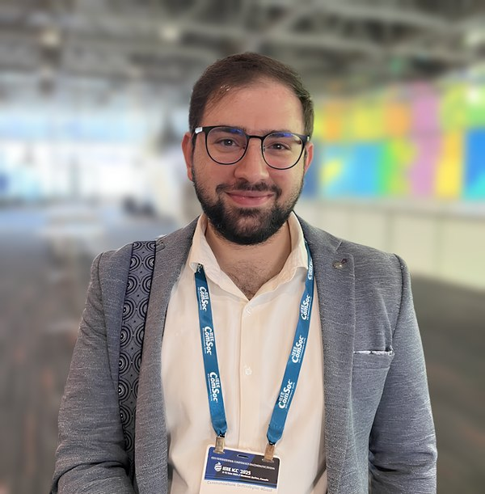

Mhd Saria Al Lahham
Senior AI/ML Engineer · Generative AI, LLMs, and Agentic Systems
AI Technical Lead, Cisco Systems · Montreal, QC, Canada
Ph.D., Queen's University
[ About
| Research Interests
| Education
| Experience
| Publications
| Software ]
About
I am a senior AI/ML engineer with more than five years of experience in deep learning,
generative AI, Large Language Models (LLMs), and agentic systems. I currently serve as AI
Technical Lead (Operations and Development) at Cisco in Montreal, where I work on agentic AI
for large-scale software systems: architecting enterprise-grade solutions that integrate LLMs
with networking and telemetry data, and building automated root cause analysis tooling and
multi-agent architectures for engineering teams.
Before Cisco, I was the AI R&D Manager at Apertera (formerly Alexa Translations),
leading the design and deployment of agentic LLM systems, RAG pipelines, and MLOps workflows
for production translation, having joined as an AI Engineer. Earlier, I was an AI/ML Research
Engineer at the Samsung Research America AI Center in Montreal, working on embedded AI,
wireless communications (5G/6G), indoor localization, and human-state estimation.
I completed my Ph.D. in Computer Science at Queen's University in 2026; my thesis was on
quantifying computational reliability in extreme edge computing, with applications to
distributed edge AI. I also did my M.Sc. in Computer Science at Queen's University in 2022,
on energy-efficient task allocation and incentive schemes for multi-orchestrator mobile edge
learning, and my B.Sc. in Computer Engineering at Qatar University. Earlier still, I was a
Research Assistant in the Smart IoT Systems Lab at Qatar University, designing AI-based
protocols for ultra-reliable low-latency communication in smart health systems.
For a comprehensive list of my publications, please visit my
Google Scholar
profile.
Research Interests
- Large Language Models: Development and evaluation of multi-agent systems.
- Federated learning and distributed algorithms for the Internet of Things.
- Computational reliability for edge computing and AI.
- Reinforcement learning for wireless communication systems and network management.
- Wireless sensing: indoor human-state estimation, localization, and home automation.
Education
- Ph.D. in Computer Science, Queen's University, Kingston, 2026.
Thesis: Quantifying Computational Reliability in Extreme Edge Computing:
Applications to Distributed Edge AI.
- M.Sc. in Computer Science, Queen's University, Kingston, 2022.
Thesis: Multi-Orchestrator Mobile Edge Learning: Designing
Energy-Efficient Task Allocation and Incentive Schemes.
- B.Sc. in Computer Engineering, Qatar University, Doha, 2020.
Graduated with High Order of Excellence.
Experience
- AI Technical Lead (Operations and Development), Cisco Systems, Montreal
(Jul 2026 – present).
Enterprise-grade agentic AI: LLMs integrated with networking and telemetry data,
automated root cause analysis tooling, and multi-agent architectures deployed with
reliability, observability, and low-latency guarantees.
- AI R&D Manager, Apertera (formerly Alexa Translations), Montreal
(Jul 2025 – Jun 2026).
System design and orchestration for production LLM and agentic workloads, and sovereign
AI capabilities covering PII, data residency, and legal constraints on training,
fine-tuning, and inference.
- AI Engineer, Apertera (formerly Alexa Translations), Montreal
(Jul 2024 – Jun 2025).
A RAG-powered translation system with agentic LLM orchestration that outperformed
commercial translation engines on in-house data, with automated metric-collection and
quality-evaluation pipelines.
- AI/ML Research Engineer, Samsung Research America, AI Center, Montreal
(Oct 2022 – Feb 2024).
Embedded AI on real hardware and in simulation for indoor localization, computer vision,
and RAN optimization; scientific papers and patent applications.
- Research Assistant, Smart IoT Systems Lab, Qatar University, Doha
(May 2020 – Sep 2021).
AI-based protocols for ultra-reliable low-latency communication (URLLC) in smart health
systems.
Selected Publications
- Reliable Federated Learning with Auction-Based Incentives at the Extreme Edge.
IEEE Globecom 2024. Best Paper Award, IoT and Sensor
Networks Symposium.
[IEEE Xplore]
- Multi-Agent Reinforcement Learning for Network Selection and Resource Allocation in
Heterogeneous Multi-RAT Networks.
[IEEE Xplore]
- O2AS: Optimistic Online Aerial Search via Vision-Language Models.
[IEEE Xplore]
- Probabilistic Mobility Load Balancing for Multi-band 5G and Beyond Networks.
[arXiv]
- Zero Touch Realization of Pervasive Artificial Intelligence as a Service in 6G Networks.
[IEEE Xplore]
- Reliable Federated Learning for Age Sensitive Mobile Edge Computing Systems.
[IEEE Xplore]
- Incentive-based Resource Allocation for Mobile Edge Learning.
[IEEE Xplore]
A complete and up-to-date list is available on
Google Scholar.
Software
- MERLIN: a library for
simulating 5G wireless networks, with the ability to integrate and develop
state-of-the-art reinforcement learning algorithms.
- 3GPP-chat:
chat with 3GPP standards and documents locally, using Retrieval Augmented
Generation (RAG).